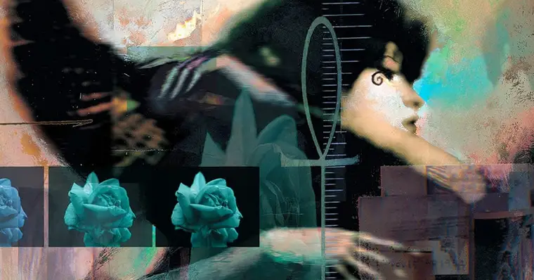

Morte

A Morte é a irmã mais velha de Sonho e a segunda mais velha dos Perpétuos.
Ela ama seu trabalho e o leva muito a sério. A morte, por sua própria admissão, nem sempre foi quem é agora. No começo dos tempos, ela achava que tinha o trabalho mais difícil entre os Perpétuos, e isso a deixou tão triste que, na verdade, ela parou de fazê-lo. Quando nada morreu, o caos reinou, e ela foi implorada para retornar ao seu reino. Ela fez isso, mas ficou "dura, fria e quebradiça por dentro".
Uma mostra disso pode ser vista no arco "Noites Sem Fim", em sua atitude arrogante e gelada. Seu comportamento não mudou até que ela foi convidada por alguém que ela coletou; Em "How would you like it?" Depois desta situação, resolveu viver um dia como mortal para ver como gostava e o que podia aprender. Foi só depois de seu gosto pela mortalidade que ela mudou a maneira como pensava sobre seu trabalho. Ela decidiu que, no final, a maioria ficaria feliz pela companhia de um amigo, e foi isso que ela tentou se tornar, uma amiga para aqueles que ela leva.
Desde então, a personalidade da Morte ficou amigável, otimista e atenciosa.
Quando surge em Sandman, fica bem nítido que Morte é uma das únicas Perpétuas que tem uma relação mais próxima a Morpheus. Embora discorde de seu irmão em vários aspectos, ela entende os desejos e vontades de Sonho, e frequentemente aparece como uma aliada para o Perpétuo, sobretudo nos momentos em que ele mais precisa de sua ajuda.
Poderes e Habilidades
Assim como todos os outros Perpétuos, a Morte possui um conjunto de vastos poderes que a tornam um dos seres mais poderosos do universo. Ela é onipresente e onisciente, estando em todos os lugares ao mesmo tempo - ainda que ela só se deixe revelar quando assim deseja. Ela também é capaz de criar ilusões, se teleportar e até mesmo usar magia.
Porém, seu grande diferencial é justamente ser a personificação da morte. Por conta disso, ela é capaz de lidar diretamente com a linha vital de qualquer pessoa. Em alguns casos, ela pode até impedir que alguém morra e conferir imortalidade a alguns (como é o caso de Hob Gadling). Além de todas essas coisas, a Morte também é um ser imortal.
INICIO